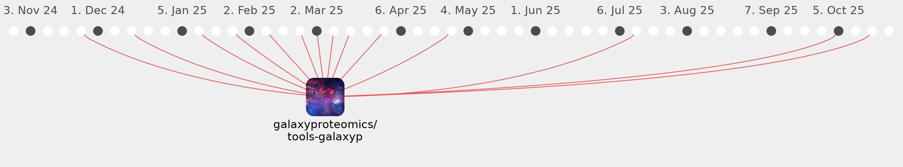

reid-wagner

Commits all-time: 111
Commits last year: 47

(46)
- 85137dc
- 44a627b
- a3b81b2
- 67fa61c
- 2485706
- ba90bef
- 8c78dd6
- 1f1a65c
- 38962f5
- c72c173
- 93389ad
- b4b31b8
- e196063
- a3f600b
- abde55b
- cdb8815
- 3d53568
- 473bb22
- c1149af
- 34c0cd0
- bb0619c
- 933ea92
- 8112075
- 818ef35
- e01bab8
- 11097ef
- a4e7ce7
- 3c696cd
- b54dee1
- ef303d3
- 3fe4caf
- 2f9f554
- 0ac7534
- 9d8b233
- 6413a46
- 3c55835
- bec16bc
- 021cc1e
- 5e8cc33
- 355e406
- 807ca51
- abe1acb
- a9276b8
- bcff8b2
- c4e5975
- e579248
(1)